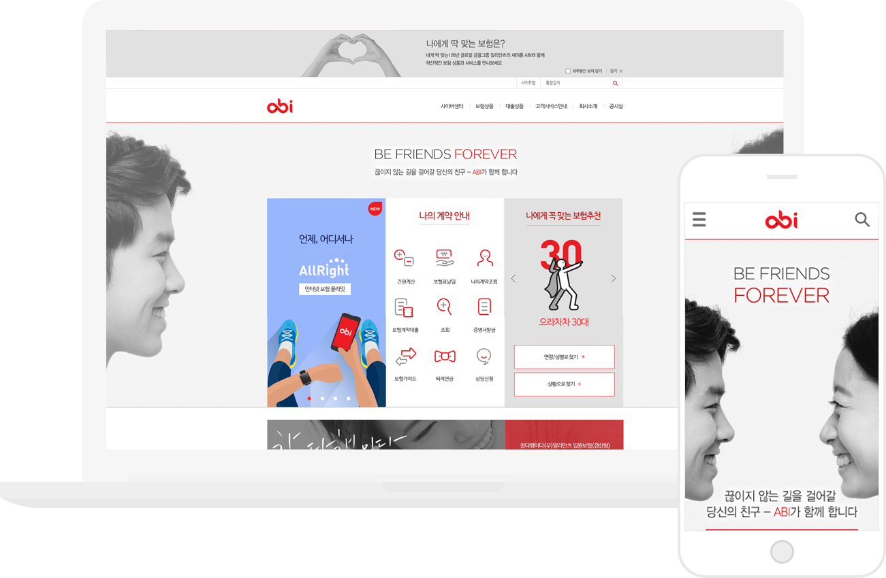

참여도
100%
작업내용
abi 제안 발표용 퍼블리싱 작업을 하였으며, 제안용 작업이다보니 하드코딩 보다는 인터렉션 효과에 더 중점을 두어 작업하였다.
특히나 이 작업은 미디어쿼리를 이용하여 반응형으로 작업하였다.
PC, tablet, mobile 버젼으로 넘어가도록 작업하였고, PC에서 태블릿 사이즈로 넘어 갈때 상단 팝업창이 노출되지 않도록 하였다.
컨텐츠 순서 및 정렬도 다르게 배열하여, 반응형 효과가 더 생동감 있게 보이도록하였다.
무엇보다 반응형으로 작업하면서 팝업을 노출시킬 때가 사이즈별로 달라서 까다로웠는데, '나에게꼭맞는보험추천 > 연령/성별로찾기, 상황으로찾기'영역에서
경우의수에 따른 팝업내용을 연출하고, 팝업이 띄워진상태에서 배경이 스크롤되지 않도록 막아놓는 스크립트도 사용하여 완성도를 높였다.